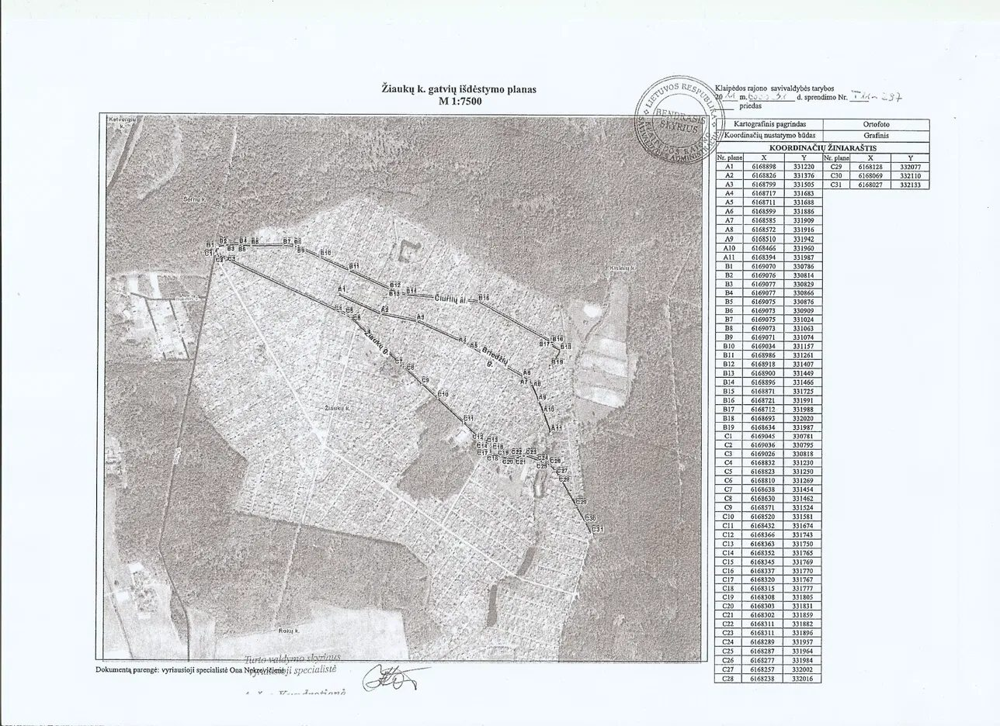
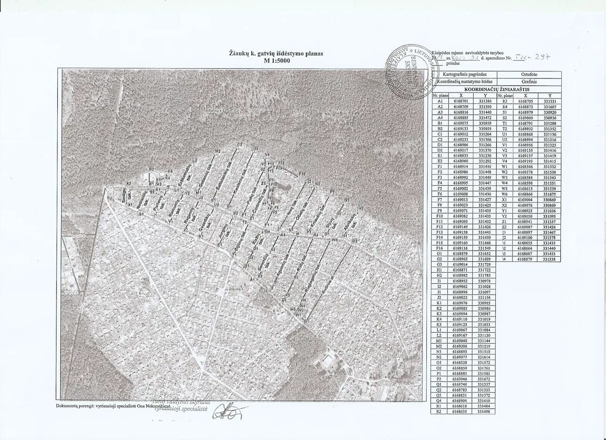
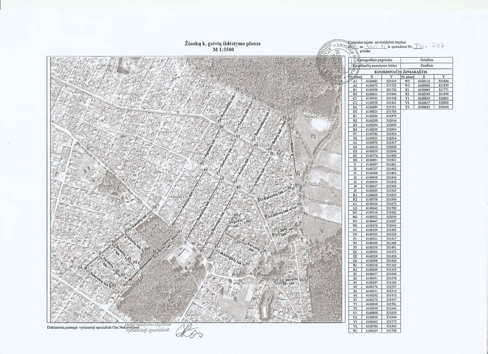

Žemėlapis ir vidaus tvarkos taisyklės
Bendrijos teritorijos schema ir galiojančios vidaus tvarkos taisyklės — peržiūrai tiesiai svetainėje.
Teritorijos schema
Gatvių planas ir sklypų išdėstymas bendrijos teritorijoje.



Vidaus tvarkos taisyklės
Patvirtinta bendrijos narių pakartotiniame ataskaitiniame-rinkiminiame susirinkime 2013-04-27 (protokolas Nr. 10).
I. Bendroji dalis+
- Sodininkų bendrija yra savarankiškas, pelno nesiekiantis fizinių asmenų susivienijimas, turintis juridinio asmens teises, kurio tikslas – plėtoti mėgėjišką sodininkystę, daržininkystę, gėlininkystę, bitininkystę ir kitą sodininkystės veiklą, vienijantis žemės sklypų savininkus ir nuomininkus bei valdantis bendrijos teritorijoje esantį bendrijai nuosavybės teise priklausantį turtą.
- Bendrijos veiklai vadovauja bendrijos narių visuotinis susirinkimas, o laikotarpiu tarp susirinkimų – bendrijos valdyba.
- Sodininkų bendrijoje „Šernai“ sudaryta 11 grandžių. Grandims vadovauja grandies susirinkime išrinkta valdyba, iš kurios narių išrinktas grandies seniūnas. Grandies seniūnas atstovauja grandžiai išplėstiniuose bendrijos valdybos posėdžiuose ir supažindina grandies narius su priimtais nutarimais.
- Bendrijos vidaus tvarkos taisyklės parengtos vadovaujantis Lietuvos Respublikos Sodininkų bendrijų įstatymu (2003 m. gruodžio 18 d. Nr. IX-1934), kitais teisės aktais.
- Sodininkų bendrija turi nustatytą Juridinio asmens kodą – 163672133. Sodininkų bendrijos įstatai registruojami Valstybinės registrų centro įmonės Klaipėdos filiale. Bendrijos valdyba ir kiekvienas sodininkas savo veikloje vadovaujasi LR Sodininkų bendrijų įstatymu, bendrijos įstatais ir šiomis Vidaus tvarkos taisyklėmis.
- Bendrijos valdyba pagal bendrijos žemės sklypo planą organizuoja sodo aikštelių, kelių, takų ir kitų projekte numatytų objektų atžymėjimus natūroje ir užtikrina, kad šių ribų būtų laikomasi. Mėgėjiško sodo teritorija priskiriama žemės ūkio paskirties žemei.
- Bendrija privalo rūpintis natūralia gamtine aplinka, laikytis įstatymų nustatytų aplinkos apsaugos reikalavimų, saugoti ir prižiūrėti bendrojo naudojimo plotuose augančius miškus, medžius ir kitą augaliją, vandens telkinius, atskirus gamtos objektus, globoti naudingąją gyvūniją.
- Siekiant įgyvendinti savo tikslus kultūrinėje veikloje, bendrijos valdyba organizuoja bendrijos sklypų apžiūras, parodas, derliaus šventes, dalyvauja Lietuvos sodininkų draugijos ir miestų (rajonų) susivienijimų rengiamose parodose, mugėse, konkursuose ir kituose renginiuose.
- Bendrijos valdyba prie įvažiavimo į bendriją įrengia informacines skelbimų lentas, kuriose nurodo bendrijos teritorijos schemą, bendrijos pavadinimą, patikslintą teritorijos žemėtvarkos projektą ar kitą teritorijų planavimo dokumentą. Bendrojo naudojimo žemę bendrija gali nuomoti ar išsipirkti iš valstybės.
II. Ribos ir statiniai+
- Kiekvienas sodininkas yra savininkas, išsipirkęs iš valstybės žemės sklypą, kuris yra įteisintas. Ribos tarp sodo kelių ir narių sklypų gali būti pažymimos negiliais grioveliais arba tvorele, žemaūgiais želdiniais. Sodininkas savo sklypą gali apverti dekoratyvine medine, iš vielos tinklo tvora arba karpoma gyvatvore. Svarbu, kad kaimynams nekristų pavėsis.
- Medžius ir krūmus mėgėjiško sodo teritorijoje sodininkai tvarko ir prižiūri savo nuožiūra. Atskirti sklypą nuo kaimyninio sklypo gyvatvore per šių sklypų ribą galima turint rašytinį kaimyninio sklypo savininko sutikimą, o kai sklypas ribojasi su bendrojo naudojimo teritorija – rašytinį bendrijos valdybos ar pirmininko sutikimą. Sodo sklype medžiai ir krūmai sodinami laikantis šių reikalavimų:
- aukštaūgiai medžiai, aukštesni kaip 3 m, sodinami ne mažesniu kaip 3 m atstumu nuo sklypo ribos; šiaurinėje sklypo dalyje arčiau kaip 5 m nuo kaimyninio sklypo ribos – tik gavus rašytinį kaimyninio sklypo savininko sutikimą;
- žemaūgiai medžiai (iki 3 m aukščio) sodinami ne mažesniu kaip 2 m atstumu nuo sklypo ribos;
- krūmai sodinami ne mažesniu kaip 1 m atstumu nuo sklypo ribos;
- krūmų, dekoratyvinių bei kitų augalų neturi būti arčiau kaip 1 m nuo bendrijos teritorijos ribų tvoros;
- mažesniais atstumais sodiniai gali būti sodinami turint rašytinį kaimyninio sklypo savininko sutikimą.
- Gyvatvorės krūmai turi būti nuolat karpomi, jų aukštis – ne didesnis kaip 1–1,2 m.
- Pertvarkyti sodo teritoriją ar jos dalį statant gyvenamąjį namą ar jo priklausinius, rekonstruoti pastatytą sodo namą į gyvenamąjį namą privaloma vadovaujantis LR aplinkos ministerijos 2002-03-19 patvirtintu reglamentu STR 1.07.03:1999.
- Sodo sklype statiniai statomi laikantis šių reikalavimų:
- pastatai – ne mažesniu kaip 3 m, inžineriniai statiniai (išskyrus tvoras) – ne mažesniu kaip 1 m atstumu nuo sklypo ribos, kad nedarytų žalos kaimyniniam sklypui; mažesniu atstumu – turint rašytinį kaimyno arba valdybos/pirmininko sutikimą;
- tvoros tarp sklypų turi atitikti insoliacijos reikalavimus; kitokioms tvoroms – rašytinis kaimyno sutikimas; nuo bendrojo naudojimo teritorijos galima aklina tvora;
- tvorą ant sklypo ribos statyti galima turint rašytinį kaimyno arba valdybos/pirmininko sutikimą.
- Mėgėjiško sodo sklype Statybos įstatymo tvarka galima statyti ar rekonstruoti vieną vienbutį gyvenamąjį namą (ir priklausinius) arba vieną sodo namą (ir priklausinius), nekeičiant pagrindinės žemės naudojimo paskirties ir nepažeidžiant trečiųjų asmenų interesų.
- Pastatai gali būti statomi, jei neviršijami šie rodikliai:
- sklypo užstatymo didžiausias tankumas – 30 proc.;
- gyvenamojo pastato ar sodo namo didžiausias aukštis – 8,5 m;
- priklausinio didžiausias aukštis – 6 m;
- nesudėtingo priklausinio didžiausias aukštis – 5 m.
- Projektuojant ir statant statinius, būtina išlaikyti šiuos atstumus:
- gyvenamas namas nuo gretimo sklypo ribos – ne arčiau kaip 3 m;
- gyvenamas namas nuo gatvės raudonosios linijos – ne arčiau kaip 5 m;
- ūkinis pastatas, garažas, šiltnamis – 2 m nuo sklypo ribos;
- lauko tualetas (ne ūkiniame pastate) – ne arčiau kaip 4 m nuo sklypo ribos; kiekviename sklype privalo būti nuotekų duobė su biologinėmis kvapų šalinimo priemonėmis.
- Sodo sklypai gali būti padalijami ar atskiriamos jų dalys, jeigu galima suprojektuoti ne mažesnius kaip 0,04 ha sklypus.
- Sodo sklypai mėgėjiškos sodininkystės reikmėms gali būti sujungiami.
III. Tvarka ir prievolės+
- Sodo sklypas turi būti tvarkomas laikantis agrotechnikos reikalavimų, racionaliai išnaudojant žemę ir derinant su aplinkos estetika.
- Kiekviename sklype turi būti palaikoma švara, naikinamos piktžolės, kovojama su augalų ligomis ir kenkėjais. Nedirbamų sklypų šeimininkai, darantys žalą kaimynams, baudžiami įstatymų nustatyta tvarka. Prie bendrijos kelių draudžiama sodinti šaltalankius ir kitus plačiai šaknis skleidžiančius augalus.
- Draudžiama išravėtas piktžoles ir kitas atliekas mesti ant kelių ar krauti už sodo ribos. Joms – kompostinė ar buitinių atliekų duobė sklypo nuošalesnėje vietoje, ne arčiau kaip 3 m nuo kaimyno ribos.
- Neorganinės atliekos (plastmasė, stiklas, statybinės atliekos ir kt.) turi būti pastoviai išvežamos.
- Atvežtas mėšlas, durpės ir kitos trąšos per 2–3 dienas sukompostuojamos arba įterpiamos į dirvą. Fekalines trąšas į sodą vežti draudžiama.
- Bendrijos valdyba gali pavesti nariams kelių, pakelių, aikščių, tvorų, apsauginių juostų, medžių ir krūmų priežiūrą pagal jiems priskirtus plotus.
- Šie darbai gali būti atliekami organizuojant talkas; visuotinis susirinkimas gali kasmet nustatyti privalomą talkose išdirbamų valandų skaičių.
- Nedalyvavęs talkose ir neišdirbęs nustatyto valandų skaičiaus sodininkas privalo sumokėti bendrijai nustatytą sumą.
- Balandžio–gegužės mėnesiais bendrija organizuoja talkas aplinkos ir priskirtų miško zonų tvarkymui 100 m atstumu; sistemingai gamtą teršiantys sodininkai gali būti baudžiami pasitelkus miškininkus, gamtosaugininkus.
- Sodininkai privalo laiku mokėti nustatytus nario ir tikslinius mokesčius. Ne nariai atsiskaito pagal bendrijos sąskaitas. Įmokas patvirtinantys dokumentai saugomi 3 metus.
- Už mokesčių nemokėjimą skaičiuojami delspinigiai, gali būti taikomos kitos poveikio priemonės, viešai skelbiami skolininkų sąrašai.
- Nuo gegužės 15 d. iki rugsėjo 15 d. poilsio ir švenčių dienomis atliekas deginti draudžiama.
- Visi nariai turi laikytis bendravimo normų, netrukdyti kaimynams dirbti ir ilsėtis.
- Sodo ramybės laikas – nuo 23 val. iki 7 val.
- Sode neleidžiama garsi muzika.
- Kiekvienas savininkas privalo pažymėti savo sklypą suteiktu adreso numeriu.
IV. Gyvūnai+
- Narys turi teisę laikyti paukščius, triušius, nutrijas, bites, ožkas, griežtai laikantis sanitarijos bei veterinarijos taisyklių ir nedarant žalos aplinkai ar kaimynams. Voljerai – ne arčiau kaip 4 m nuo kaimyninio sklypo ribos.
- Palaidus šunis, vištas, žąsis mėgėjiškuose soduose laikyti draudžiama.
- Nariai privalo globoti naudingus paukščius, įrengti inkilus, neteršti vandens telkinių, miškų ir žaliųjų plotų, nelaužyti eglišakių, nekirsti medžių bei krūmų, neskinti į Raudonąją knygą įtrauktų augalų. Kiekvieno pareiga – sudrausti gamtos pažeidėjus.
V. Transportas+
- Transporto priemonės laikomos sodo sklype arba tam įrengtose aikštelėse. Laikyti jas sodo keliuose griežtai draudžiama.
- Greitis sodo keliuose neturi viršyti 30 km/h. Sugadintus kelius ir įrenginius taiso kaltininkas. Kelio ženklus ir stovėjimo vietas parenka bendrijos valdyba.
VI. Nuosavybės perleidimas+
- Parduodamas, dovanodamas ar kitaip perleisdamas sklypą, narys privalo informuoti valdybą ir sumokėti mokesčius. Prieš perleidimą būtina gauti bendrijos pažymą apie atsiskaitymą už prievoles – ji pateikiama notarui sudarant sandorį.
VII. Bendrijos ūkis+
- Bendrojo naudojimo objektus bendrija valdo Civilinio kodekso, Sodininkų bendrijų įstatymo ir kitų įstatymų nustatyta tvarka.
- Vandens laistymo magistralinius vamzdynus remontuoja ir prižiūri bendrijos valdyba; grandžių teritorijose – grandžių tarybos, seniūnai ir kiekvienas sodininkas. Turi būti laisvas priėjimas prie vamzdynų (po 0,5 m iš abiejų pusių).
- Pagrindinių kelių (gatvių, alėjų) priežiūra – bendrijos valdybos, mažų gatvelių (takų) – grandžių tarybų, seniūnų ir kiekvieno sodininko rūpestis.
- Nesilaikantiems įstatų, taisyklių ar susirinkimo/valdybos nutarimų taikomos poveikio priemonės: baudos ir kitos priemonės pagal galiojančius įstatymus.
- Valdyba atsiskaito nariams susirinkime apie įvykdytus darbus ir panaudotas lėšas.
- Bendrijos veiklą kontroliuoja Revizijos komisija, kurios įgaliojimų terminą nustato visuotinis susirinkimas.
- Finansinę veiklą (kiek tai susiję su mokesčiais) kontroliuoja Valstybinė mokesčių inspekcija.
- Lėšų apskaita ir raštvedyba tvarkoma įstatymų nustatyta tvarka.
- Ginčai tarp bendrijos ir jos narių sprendžiami teismine tvarka.
- Siekiant užkirsti kelią nusikalstamumui, bendrija glaudžiai bendradarbiauja su vietos policija.
- Statyti paslaugas teikiančių įmonių pastatus bendrijos teritorijoje leidžiama tik gavus narių susirinkimo sutikimą. Verslo pastatus statyti draudžiama.
SB „Šernai“ valdybos pirmininkė Daina Baronienė · patvirtinta 2013-04-27
Žiūrėti pasirašytą originalą (PDF)